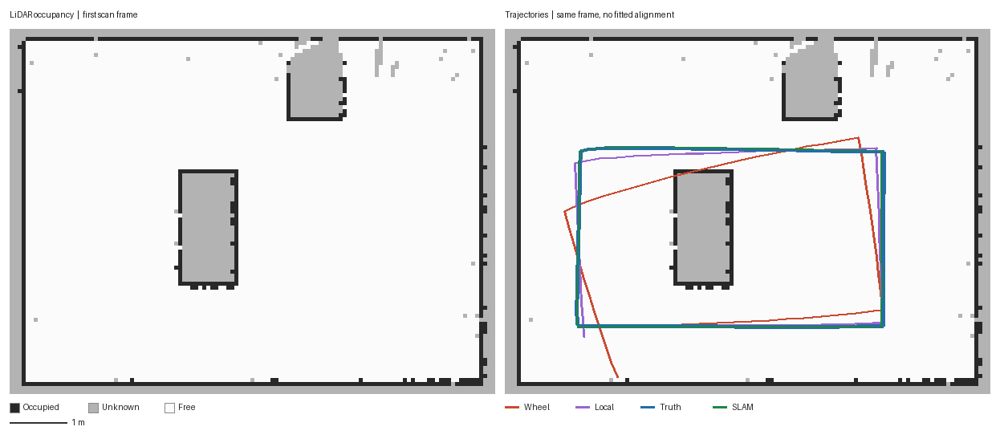
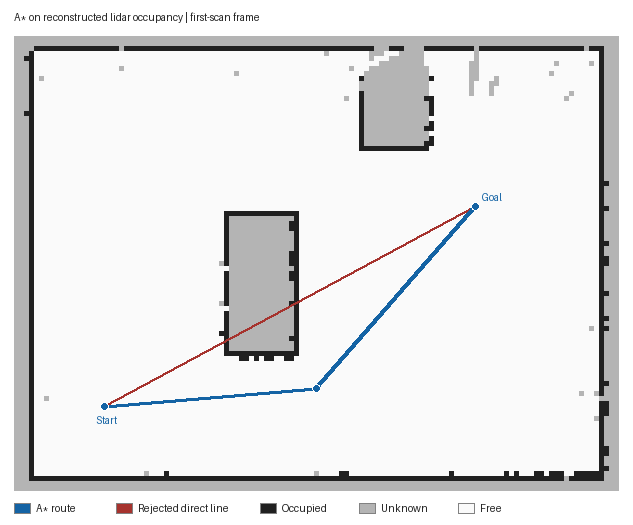
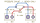

직무별 검증
지원자가 직접 실행한 피킹 복구 실험과 Codex가 추가 검증한 실물 사진·보정·주행·설비 연동 기록입니다.

현재 모델 · MuJoCo 시뮬레이션 녹화
로봇이 상자를 다시 집어
파란 통에 놓는 장면
첫 시도에서 흡착에 실패했습니다. 로봇이 다시 관측한 뒤 같은 빨간 상자를 들어 옮깁니다.
실패 원인에 따라 운반 높이 선택
지원자는 경로 차단을 감지한 재시도에서만 높이를 0.40 m로 올리고, 흡착 실패 뒤에는 0.30 m를 유지하도록 변경했습니다. 아래 두 작업은 모두 두 번째 시도에서 배치를 완료했습니다.
| 개발 seed 200 · 재계획 정책 | 수정 전 | 수정 후 |
|---|---|---|
| 경로 차단 | 19.690초 | 19.690초 |
| 보정 오차로 첫 흡착 실패 | 26.935초 | 24.405초 |
다섯 작업에서 충돌·낙하·오배치는 전후 모두 0건이었습니다. Codex가 추가 개발 seed 201~209로 재현한 45쌍에서도 종료 상태가 같았습니다.
식료품 사진에서 상품 식별
Grocery Store Dataset의 과일·포장 식품·채소 사진을 오프라인 판별기로 채점했습니다. 아래에서 사진별 판정 기록을 상품별로 조회할 수 있습니다.


매장 사진 제공 · Marcus Klasson, Cheng Zhang, Hedvig Kjellström. Grocery Store Dataset · WACV 2019 논문
공식 시험 사진
- 시험 사진
- 정확히 식별
- 다른 상품으로 판정
- 판정 보류
이전 실험의 미등록 사진 재평가
주스 2종 실험에서 미등록으로 취급한 사진에 새 상품명을 대조했습니다. 공식 시험 사진 일부와 기존 검증·상품 카탈로그 사진이 포함됩니다.
카탈로그 밖의 외부 사진
오수락은 등록 목록에 없는 대상을 등록 상품으로 판정한 경우입니다.
이전 미등록 사진의 정답·판정 조회
공식 정답은 Grocery Store Dataset이 각 사진에 붙인 상품명입니다. 모델 판정은 같은 사진 파일을 새 판별기로 실행한 결과입니다. 파일명을 누르면 평가에 사용한 원본 사진이 열립니다.
| 원본 사진 | 공식 정답 | 모델 판정 | 결과 |
|---|
상품별 공식 시험 결과
| 상품 | 시험 | 정답 | 오답 | 보류 |
|---|
이전 실험 · 주스 2종의 포장 판별
같은 매장 사진에서 사과·오렌지주스 정답이 54장 중 3장에서 44장으로 늘었습니다. 등록된 포장의 글자와 그림 배치를 먼저 찾고, 찾은 면의 색으로 맛을 구분했습니다.
| 판정 방식 | 등록 주스 정답 | 다른 포장 오수락 | 과일·채소 오수락 |
|---|---|---|---|
| 주스 두 종 단순 등록 | 46 / 54 | 727 / 727 | 1,539 / 1,704 |
| 거리 기준 강화 | 3 / 54 | 36 / 727 | 46 / 1,704 |
| 사진 전체 특징으로 학습 | 33 / 54 | 20 / 727 | 524 / 1,704 |
| 포장 무늬·색 확인 | 44 / 54 | 0 / 727 | 0 / 1,704 |
사과주스는 23장 중 15장, 오렌지주스는 31장 중 29장을 맞혔습니다. 맛을 서로 바꿔 판정한 사진은 0장입니다. 보류한 10장 중 6장은 포장 면을 확인하지 못했고, 4장은 색으로 맛을 확정하기 어려웠습니다.
표는 기존 시험 사진의 재평가입니다. 카탈로그 사진에서는 등록 2장 정답, 미등록 29장 모두 거부였습니다. 추가로 처음 평가한 미등록 과일·채소 196장도 모두 거부했습니다. 실물 사진 파일로 판별을 실행할 수 있습니다.

시뮬레이터의 줄무늬 A/B 모델
줄무늬 모델은 실제 미등록 포장 781장 중 2장을 오수락했습니다. 원래 A/B 표식을 붙인 실물 상자의 정답률은 미측정입니다. 직접 촬영용 라벨
RGB-D로 배치할 상자 찾기
상자의 위치·회전·크기를 바꾼 MuJoCo 장면 32개에서 상단 테두리와 내부 바닥 깊이로 입구를 추정했습니다. 중앙 위치 오차의 95백분위는 0.329 mm였습니다.
별도 피킹 작업 8건에서 관측한 입구로 물체를 배치했습니다. 상자 없음·두 개·맞닿은 두 개·입구 폭 부족의 네 조건에서는 접근 전에 보류했습니다. 시험 대상은 고정 카메라 아래의 파란색 직사각형 상자입니다.

손목에 장착한 카메라의 좌표 보정
USDA가 공개한 Denso 로봇과 Sony 카메라의 체크보드 기록 88쌍을 오프라인으로 분석했습니다. 66개 자세로 맞춘 변환을 고정한 뒤, 남겨 둔 22개 자세에서 코너 1,056개의 픽셀 위치를 예측했습니다.
보지 않은 자세의 픽셀 예측 RMS 오차는 5.156 px, 기준판 위치 일관성 RMS 오차는 11.820 mm였습니다. 별도 합성 실험에서는 한 회전축만 움직인 입력을 보정 불가로 판정했습니다.

6축 팔이 지그를 우회하는 경로
두 관절 자세를 직선으로 이으면 팔이 지그에 10.83 mm 겹칩니다. 같은 장면에서 양방향 RRT-Connect가 세 시드 모두 우회 경로를 찾았습니다. 경로를 따라 검사한 최소 형상 간 거리는 시드별로 12.21, 8.52, 11.90 mm였습니다.
별도의 정지 자세 시험에서 6번 관절은 12 N·m 요청에 설정 한계인 8 N·m를 출력했습니다. 두 시험 모두 독립된 6축 MuJoCo 모델에서 수행했습니다.
라이다 지도 작성과 재방문 보정
시뮬레이터에서 바퀴와 36개 라이다 거리 측정을 기록한 뒤 사전 지도 없이 지도를 재구성했습니다. 같은 방에서 약 16.7 m를 이동한 세 기록의 위치 RMSE는 바퀴만 사용하면 0.616–0.664 m, 재방문 제약으로 자세를 보정하면 0.012–0.022 m였습니다.
기존 주행·피킹 임무는 알려진 지도와 EKF로 운행합니다. 여기에 표시한 지도는 별도 센서 기록으로 만든 오프라인 평가 결과입니다.


라이다로 만든 지도에서 우회 경로 찾기
시드 7의 바퀴 오도메트리와 라이다 69개 키프레임으로 점유 지도를 재구성하고, 차체 반경과 여유를 합한 0.370 m를 적용해 A*로 6.373 m 우회 경로를 계산했습니다.
재구성 지도에서 경로 중심선의 최소 여유 하한은 0.380 m였습니다. 장애물을 지나는 직선은 거절했고, 점유 셀과 미관측 셀을 목표로 주면 모두 NO_PATH로 응답했습니다.
이 경로를 별도 시드 23에서 엔코더·라이다 피드백으로 주행했습니다. 22.92초 동안 6.372 m 이동한 뒤 목표에서 4.3 cm 떨어진 곳에 정지했습니다. 새 장애물을 넣으면 1.060 m 주행 후 차체 여유 10.3 cm에서 멈췄습니다.

빈 지도에서 출발하면
시드 31에서는 사전 지도 없이 시작했습니다. 라이다로 이미 본 공간과 아직 못 본 공간의 경계를 찾아 두 곳으로 이동하고, 멈출 때마다 지도를 갱신했습니다. 2.704 m를 주행하는 동안 관측한 자유 셀은 5,926개에서 8,476개로 늘었습니다. 두 구간의 탐색 한도에 도달해 정지했습니다.
두 대의 이동로봇이 충전기 하나를 공유할 때
정상 시뮬레이션에서 첫 AMR이 충전 구역을 비운 뒤 77.80초에 두 번째 AMR이 진입 권한을 얻었습니다. 단자 전압·전류로 적산한 충전량은 각각 0.336370 Wh와 0.288264 Wh였습니다.
접점 열림, 낮은 전압, 전류 없음, 충전 중 전류 단절을 각각 시험했습니다. 네 경우 모두 첫 차량은 릴레이를 열고 정지했고 다음 차량은 대기했습니다.
48대가 한 통로를 동시에 요청하면
한 호스트에서 독립 로봇 프로세스 48개를 TCP로 중앙 관제기에 연결했습니다. 먼저 진입한 별도 로봇의 연결이 끊기자 48개 모두 대기했습니다. 통로가 비었다는 모의 신호를 받은 뒤 차례로 진입해 384개 작업을 완료했습니다.
이 실행에서 최대 동시 점유는 1대, 점유 해제 확인 전 진입 허가는 0건이었습니다. 대기 시간의 95백분위는 0.913초였습니다.
밸브를 끄라는 명령의 응답이 끊기면
소프트웨어 PLC(Awlsim)와 C++ 제어기를 Modbus TCP로 연결한 시험입니다. 물체를 받침대에 내려놓은 상태에서 밸브 해제를 요청하고, PLC가 보낸 응답 한 건을 의도적으로 끊었습니다.
- 해제 요청. 연결 15에서 명령 2147483682를 보냈습니다. PLC 스캔 9에서 밸브가 꺼졌고, 제어기에는 쓰기 응답이 도착하지 않았습니다. 전송 기록 · PLC 출력
- 재연결 후 조회. 제어기는 연결 16을 열고 상태 레지스터를 읽었습니다. 마지막 처리 ID가 방금 보낸 명령과 일치했습니다. 조회 요청과 응답
- 밸브 OFF 확인. 제어기가 읽은 압력은 0 kPa, 물체 부착 입력은 꺼짐이었습니다. 최종 실행 횟수는 켜기 1회와 끄기 1회를 합한 2회였습니다. 복구 판정과 최종 상태
명령 자체가 전달되지 않은 경우
별도의 시험에서는 해제 요청을 PLC에 전달하기 전에 끊었습니다. 다시 읽은 ID는 이전 명령이었고 밸브는 ON이었습니다. 제어기는 해제 완료를 보류했습니다. 명령 결과와 유지 상태
ROS 2에서 물체 운반 중 취소
Jazzy DDS 액션이 TRANSPORT를 보고했을 때 취소를 요청했습니다. MuJoCo 시드 7·8·11·19·41에서 모두 정지 확인 후 CANCELLED를 반환했습니다. 시드 41에서는 첫 흡착에 실패해 두 번째 시도에서 운반 중 취소했습니다. 다섯 번 모두 밸브 ON·압력 −55 kPa·물체 부착 상태를 유지했고, 해제 명령과 낙하는 각각 0건이었습니다.
KiCad 압력 입력 회로와 PCB
4–20 mA 전류를 150 Ω에서 0.6–3.0 V로 바꾸는 벤치 실습용 회로를 설계하고, 40 × 23 mm 2층 보드에 배선했습니다. KiCad 9.0.2에서 ERC 오류·경고, DRC 위반과 미연결 패드는 모두 0건이었습니다.
이 자료는 Codex가 만든 CAD 실습입니다. 보드 제작과 실물 측정은 미수행입니다.
